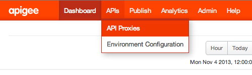
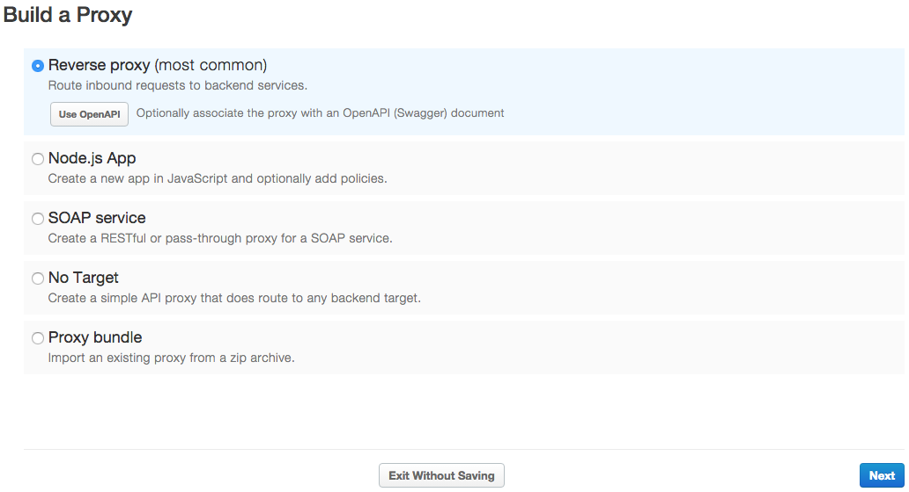
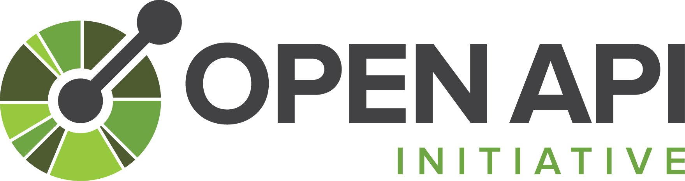
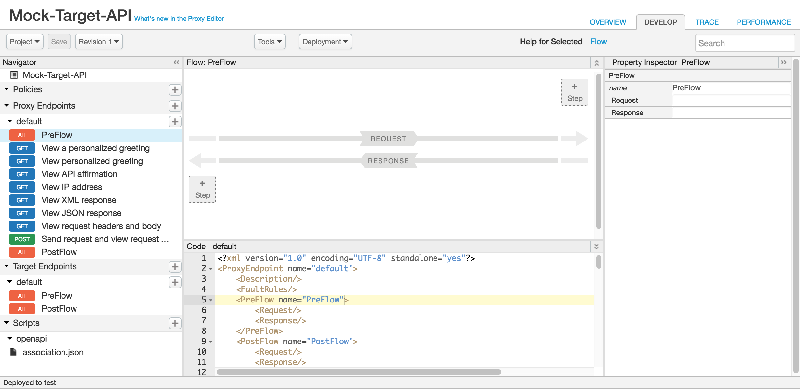

A list of all API proxies in your organization is displayed.

The Build a Proxy wizard is displayed.
[toc]
Apigee Edge enables you to quickly expose backend services as APIs. You do this by creating an API proxy that provides a facade for the backend service that you want to expose. You only need to provide the network address for the backend service, along with some information that Edge uses to create the API proxy that is exposed to developers.
The API proxy decouples your backend service implementation from the API that developers consume. This shields developers from future changes to your backend services. As you update backend services, developers, insulated from those changes, can continue to call the API uninterrupted.
The easiest way to create an API proxy is using the Edge management UI:
The wizard leads you through the steps needed to generate an API proxy and, to add some minimal features to the API proxy:

The first page of the wizard enables you create an API proxy from the following sources:
| Type | Description |
|---|---|
| Reverse proxy (most common) |
An API proxy that routes inbound requests to existing HTTP backend services. Could be a JSON or XML API. Click UseOpenAPI to generate the proxy from a valid OpenAPI specification. For more informations on this option, see Using OpenAPI to generate proxies. |
| Node.js App |
An API proxy that routes to a Node.js backend target running on Edge. Click UseOpenAPI to generate the proxy from a valid OpenAPI specification. For more informations on this option, see Using OpenAPI to generate proxies. |
| SOAP service | An API proxy generated from a WSDL file. |
| No Target |
An API proxy with no API backend ("No target"). Click UseOpenAPI to generate the proxy from a valid OpenAPI specification. For more informations on this option, see Using OpenAPI to generate proxies. |
| Proxy bundle | An existing API proxy bundle (for example one of the sample API proxies available on GitHub.) |
The following sections describe how to create an API proxy using each source.
Learn more:
Edge generates reverse proxies based on two pieces of information:
The backend service URL typically represents a service-enabled application owned by your organization. It can also point to a publicly available API. The API or service can be under your control (for example, an internal HR application or a Rails application in the Cloud) or it can be a third-party API or service (for example, Twitter or Instagram).
| Field | Description |
|---|---|
| Details | |
| Proxy Name | The name displayed for your API. |
| Proxy Base Path |
The Proxy Base Path is a URI fragment after the http(s)://[host] address of your API proxy. Edge uses the Base Path URI to match and route incoming request messages to the proper API proxy. Note: For Apigee's recommendations on API versioning, see Versioning in the Web API Design: The Missing Link e-book. After the base path are any additional resource URLs. Here's the full URL structure that clients will use to call your API proxy:
Note: The base path must be unique. If you later edit this proxy and set its base path to be the same as another API proxy, this API proxy is automatically undeployed when you save it. You must edit the base path before you can redeploy it. Using a wildcard in base paths You can use one or more Note: The Proxy Base Path defaults to the value specified for Proxy Name converted to all lower case unless you explicitly edit the content in the Proxy Base Path field. |
| Existing API | The URL that the API Platform invokes on behalf of apps that call your API through the API proxy URL. This is the URL for the Yahoo! Weather API. |
| Description | The description of the API. |
| Security | |
| API Key | Adds API key-based authentication to your API proxy. When this option is selected, the Impose Quota per Developer option becomes selectable. |
| OAuth 2.0 | Adds OAuth 2.0 based authentication to your API proxy. When this option is selected, the Impose Quota per Developer option becomes selectable. |
| Impose Quota per Developer | Adds a policy that limits the number of request messages that can be submitted to your API proxy by an individual app over an interval of time. |
| Publish API Product | When you select the Secure with API Keys option, the Publish API Product option is automatically selected. For the purposes of this tutorial, be sure to clear this option. |
| Add CORS headers | Enables CORS (cross-origin resource sharing) to allow a browser to make direct requests to another domain. |
| Virtual Hosts | |
| default | To learn about virtual hosts, see http://docs.apigee.com/node/15126. |
| secure | |
| Build | |
| Deploy Environments | To learn about virtual hosts, see http://docs.apigee.com/node/15126. |
Learn more:
Often you define API proxies as a collection of XML files, along with any other supporting files. By defining your API proxies as a set of files external to Edge you can maintain them in a source-control system, and then import them into Edge for testing and deployment.
Apigee provides a set of API proxy samples as bundles on GitHub that you can download, examine, modify, and upload to Edge. See http://docs.apigee.com/node/14921 for more.
Watch this video to learn how to create and import an API proxy from an API proxy bundle.
To import API proxies from a set of files:
| Field | Description |
|---|---|
| Details | |
| ZIP Bundle | Click Choose File and avigate to the ZIP file containing the API proxy configuration. |
| Proxy Name | The name displayed for your API. |
| Build | |
| Proxy details. | Review proxy settings. |
You can copy an existing API proxy to a new API proxy, or backup and existing API proxy to a set of XML files as an API proxy bundle. Once exported to a bundle, you can import the API proxy to a new proxy, as described above.
To copy an existing API proxy to a new API proxy:
To backup and existing API proxy to an API proxy bundle:
In the Build a Proxy wizard, select Soap Service, and follow the wizard to create a pass-through or REST-based proxy for a SOAP service.
For details, see http://docs.apigee.com/node/15726.
When you add an API proxy for an existing backend service, the Security page of the Build a Proxy wizard, lets you add features to your API such as security and support for CORS.
If you import an API bundle, then you are responsible for configuring security in the bundle. The UI does not prompt you to add security when importing the bundle.
In the Security page of the Build a Proxy wizard, select the type of security you wish to add. Choices include:
When you check Secure with API Keys, the following additional selections are available:
CORS (Cross-origin resource sharing) is a standard mechanism that allows a Web browser to make direct requests to another domain. The CORS standard defines a set of HTTP headers that Web browsers and servers use to implement cross-domain communication.
You can add support for CORS to your API by selecting Add CORS headers in the Security page of the Add a Proxy wizard.
Learn more:
This section discusses the Use OpenAPI option that is available for generating from an OpenAPI Specification the following types of API proxies: reverse, Node.js, or no target.
"The Open API Initiative (OAI) is focused on creating, evolving and promoting a vendor neutral API Description Format based on the Swagger Specification." For more information about the Open API Initiative, see https://openapis.org.
An OpenAPI Specification uses a standard format to describe a RESTful API. Written in either JSON or YAML format, an OpenAPI Specification is machine readable, but is also easy for humans to read and understand. The specification describes such elements of an API as its base path, paths and verbs, headers, query parameters, operations, content types, response descriptions, and more. In addition, an OpenAPI Specification is commonly used to generate API documentation.
The Apigee API Studio is an open source tool for developing, testing, and documenting OpenAPI Specifications.
Here's a fragment from an OpenAPI Specification that describes Apigee's mock target service, http://mocktarget.apigee.net. For more information, see https://github.com/apigee/api-platform-samples/tree/master/default-proxies/helloworld/openapi.
swagger: '2.0'
info:
description: 'OpenAPI Specification for the Apigee mock target service endpoint.'
version: 1.0.0
title: Mock Target API
host: mocktarget.apigee.net
schemes:
- http
- https
paths:
/:
get:
summary: View personalized greeting
operationId: View a personalized greeting
description: View a personalized greeting for the specified or guest user.
produces:
- text/plain
parameters:
- name: user
in: query
description: Your user name.
required: false
type: string
responses:
'200':
description: Success
/help:
get:
summary: Get help
operationId: Get help
description: View help information about available resources in HTML format.
produces:
- text/html
responses:
'200':
description: Success
...
Through the Build a Proxy wizard, you can import an OpenAPI Specification and use it to generate an API proxy. Once the proxy is generated, you can use the Edge UI to further develop it by adding policies, implementing custom code, and so on -- just like any Edge proxy.
For a step-by-step hands-on experience, step through the tutorial http://docs.apigee.com/node/20981.
To create an API proxy from an OpenAPI Specification:
https://raw.githubusercontent.com/apigee/api-platform-samples/master/default-proxies/helloworld/openapi/mocktarget.yamlClick Next.
| Field | Description | Default |
|---|---|---|
| Proxy Name | Name of the API proxy. For example: Mock-Target-API. |
title property from the OpenAPI Specification with spaces replaced by dashes |
| Proxy Base Path |
Path component that uniquely identifies this API proxy within the organization. The public-facing URL of this API proxy is comprised of your organization name, an environment where this API proxy is deployed, and this Proxy Base Path. For example: Note: The Proxy Base Path defaults to the value specified for Proxy Name converted to all lower case unless you explicitly edit the content in the Proxy Base Path field. |
Proxy Name field content converted to all lower case |
| Existing API |
Note: Field is valid for reverse proxies only. Target URL invoked on behalf of this API proxy. Any URL that is accessible over the open Internet can be used. For example: |
Properties in OpenAPI Specification are combined to create target URL:
|
| Description | Description of the API proxy. | description property |
The following provides an excerpt from the OpenAPI Specification highlighting the properties that are used to pre-populate the fields.
swagger: '2.0' info: description: 'OpenAPI Specification for the Apigee mock target service endpoint.' version: 1.0.0 title: Mock Target API host: mocktarget.apigee.net schemes: - http - https ...
paths object in the OpenAPI Specification. Conditional flows tell Edge, "When you see this, perform this logic." For more information, see http://docs.apigee.com/node/18261. For example:Note that the /help operation has been deselected on the Flows page shown above. In this case, a conditional flow will not be generated automatically for this operation, but you will still be able to call it. If necessary, you can manually configure the flow later, as described in http://docs.apigee.com/node/14717.
The following figure shows the Develop view in the Edge UI for the Mock-Target-API proxy. (Note that a conditional flow is not automatically generated for the Get help operation.)
